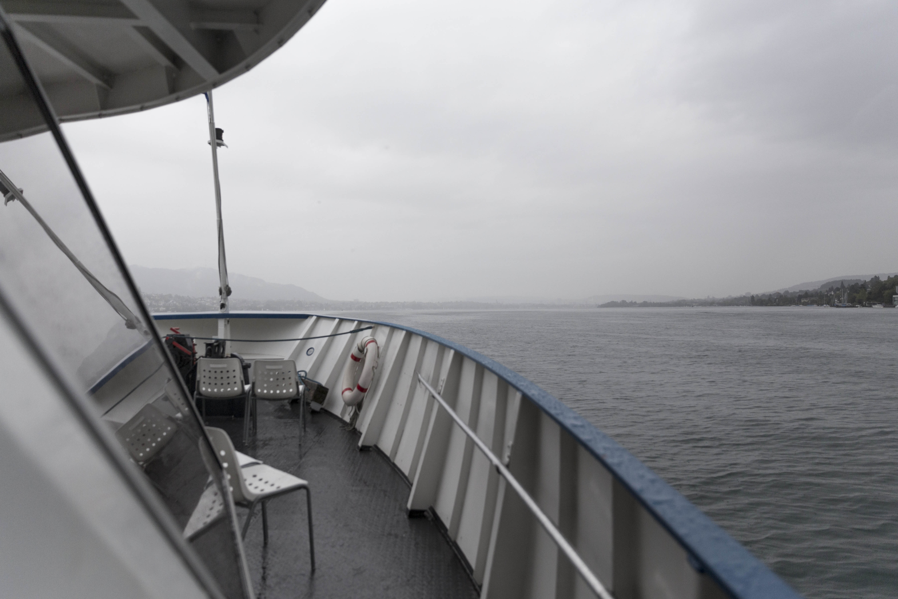

Wir haben ein Problem.
Basil, unser Lehrer, informierte uns darüber, dass wir am Samstagmorgen, dem 16.9.2017, mit dem Schiff auf den Zürichsee gingen, um Material für unsere Experimente zu sammeln. Wir machten uns also am Samstagmorgen auf den Weg zum Schiff.
Als wir an der Anlegestelle ankamen, breitete sich in uns eine gewisse Skeptik aus, denn aufgrund des schlechten Wetters waren unsere Mitschüler fast die einzigen Passagiere auf dem Schiff. Die Stimmung auf dem Schiff war ebenso zu intim, um mit unserem Experiment
zu stören.
Nach einer Weile auf dem Schiff hatten Lars, Stephanie und ich eine Lagebesprechung. Kurzerhand entschieden wir uns dafür unser ürsprüngliches Konzept über den Haufen zu werfen und auf dem Schiff einen anderen Ansatz zu verfolgen. Wir
entschieden uns dafür, dass wir ein Zeitraffer-Video auf dem Schiff aufnehmen würden und aus diesem dann eine experimentelle Geschichte erzählen würden.
Zurück an Land waren wir nicht besonders zufrieden mit unserem Plan B, denn eigentlich haben wir uns sehr darauf gefreut, unsere erste Idee durchzuführen. Aus diesem Grund haben Lars, Stephanie und ich beschlosen, dass wir am nächsten Samstag
(bei schönem Wetter) noch einmals losgehen würden, um unser erstes Konzept durchzuführen. Die Location hatten wir schon, noch bevor wir an diesem Tag an Board gingen. Wir haben uns für den Flohmarkt am Bürkliplatz entschieden.
Schade hat das Wetter nicht mitgespielt:
